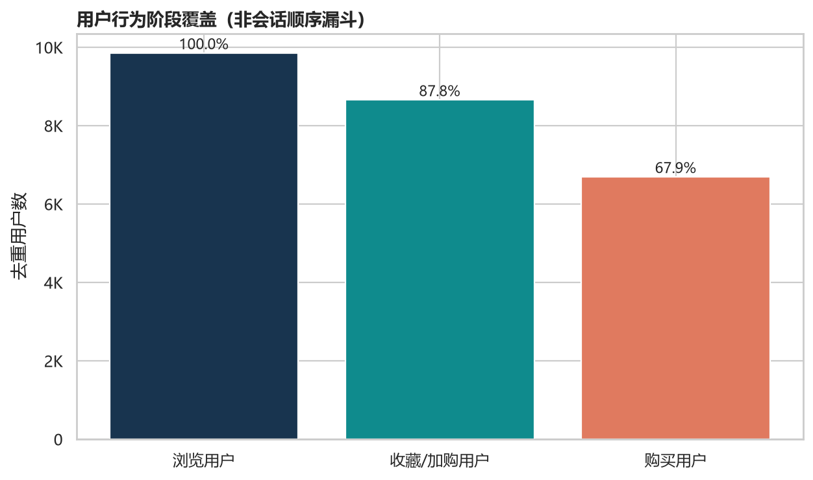
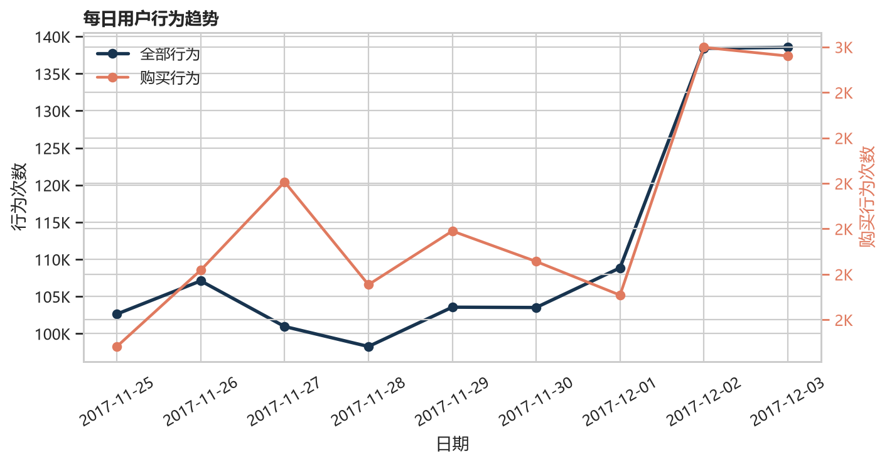
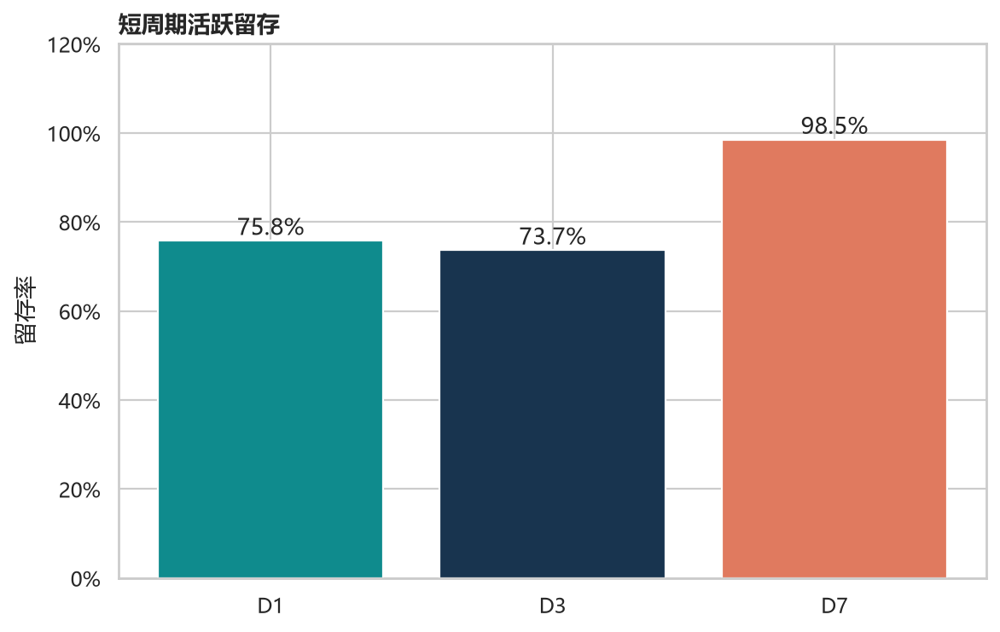

观察
兴趣阶段覆盖高于购买阶段覆盖 19.9 个百分点。
浏览、收藏或加购、购买分别按去重用户统计。阶段之间不要求同一用户按顺序发生行为，也不保证集合嵌套。

样本覆盖 2017-11-25 至 2017-12-03。末两日事件量明显抬升，但九天窗口不足以证明长期周期规律。


用户在 D0 后的目标日仍处于九天数据窗口内，才进入该目标日的合格分母。D7 的可观察用户更少，因此 98.5% 不能直接解读为留存随时间上升。
兴趣阶段覆盖高于购买阶段覆盖 19.9 个百分点。
该差异比较两个独立覆盖率。当前结果没有计算两类用户的交集，也没有证明差异来自某个可触达人群。
先在用户层计算 engaged_without_buy = engaged_users ∩ non_buyers，验证规模、类目结构和时间分布，再决定是否定向并随机分流测试收藏或加购提醒。
此页是无需运行环境的公开回退版本。交互式 Streamlit 看板将在公开部署后提供筛选、指标口径与更多图表；当前未上线，不将源码链接伪装成在线演示。